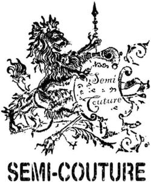

Trade Mark Journal No.2025/018 2 May 2025
WO0000001833919 (18)
Office of origin: European Union Intellectual Property Office (EUIPO)
Date of International Registration:4 November 2024
Date of designation in the UK:
4 November 2024

- Class 18
- Toiletry bags; wheeled luggage; luggage; carry-on bags; travel luggage; vanity cases, not fitted; cases of imitation of leather; key cases made of leather; key cases; cosmetic cases sold empty; pouches for holding make-up, keys and other personal items; key-cases of leather and skins; trunks and suitcases; bags; bucket bags; shoulder bags; cross-body bags; children's shoulder bags; fashion handbags; drawstring bags; roller bags; flight bags; gym bags; beach bags; bags for sports; travel baggage; travelling bags made of imitation of leather; garment bags for travel made of leather; shoe bags for travel; garment bags for travel; weekend bags; canvas bags; diplomatic bags; leather bags and wallets; waterproof bags; bags made of imitation of leather; all-purpose carrying bags; slouch handbags; bags for sports clothing; towelling bags; wash bags for carrying toiletries; book bags; shoe bags; roll bags; sporrans; small bags for men; gentlemen's handbags; key bags; purses; hipsacks; multi-purpose purses; handbags; clutch bags; small clutch purses; evening handbags; handbags made of leather; handbags made of imitations of leather; travelling sets [leatherware]; ladies' handbags; handbags, purses and wallets; overnight bags; holdalls for sports clothing; briefcases; school book bags; clothing for pets; saddlery; collars for pets; collars for animals; saddlery, whips and apparel for animals; leads for animals; luggage, bags, wallets and carrying bags; sports packs.
ABRAHAM INDUSTRIES S.r.l.
Representative: Donatella Guerzoni c/o Gidiemme S.r.l., Via Giardini, 474 scala M, I-41124 Modena, ITALY